編集部まとめ記事 一覧
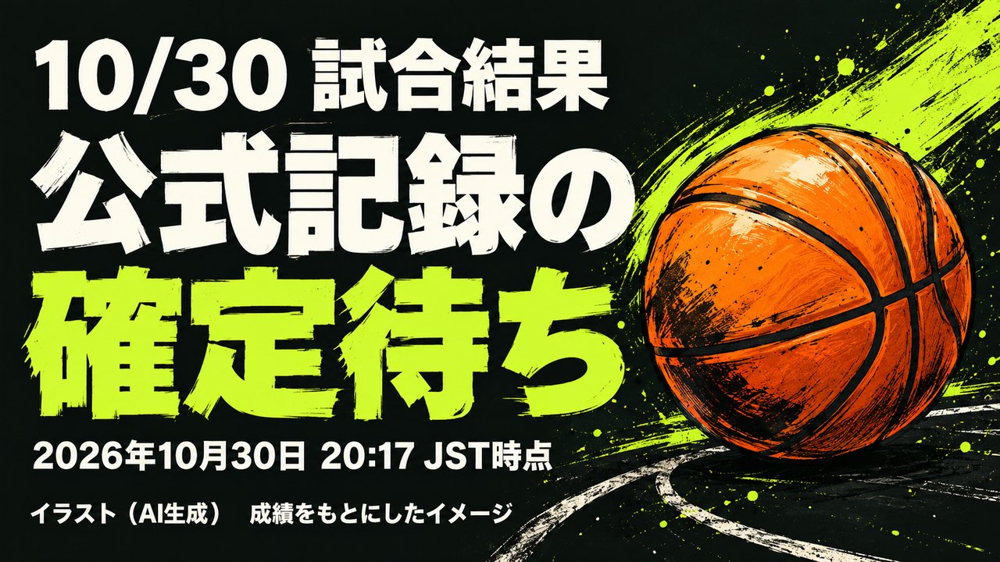
試合結果
10/30 試合結果（公式記録の確定待ち）
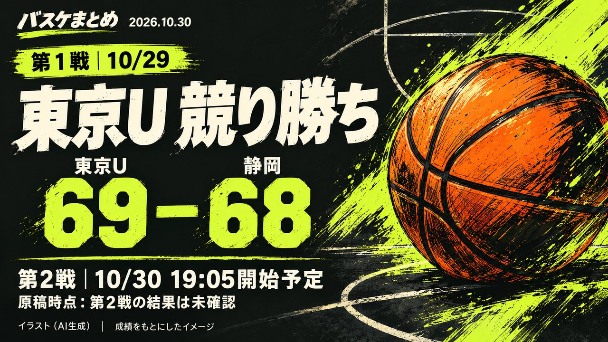
順位・日程
東京Uが静岡に69-68で競り勝ち、第2戦は今夜19時05分から同会場
試合結果
10/29 試合結果・当日のEFF
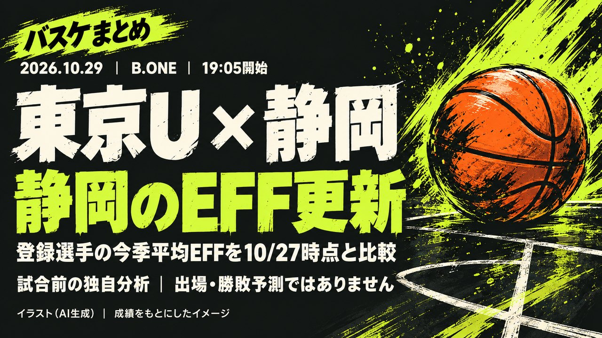
順位・日程
10/29は東京U×静岡のみ試合、独自分析で静岡のEFFが10/27から更新
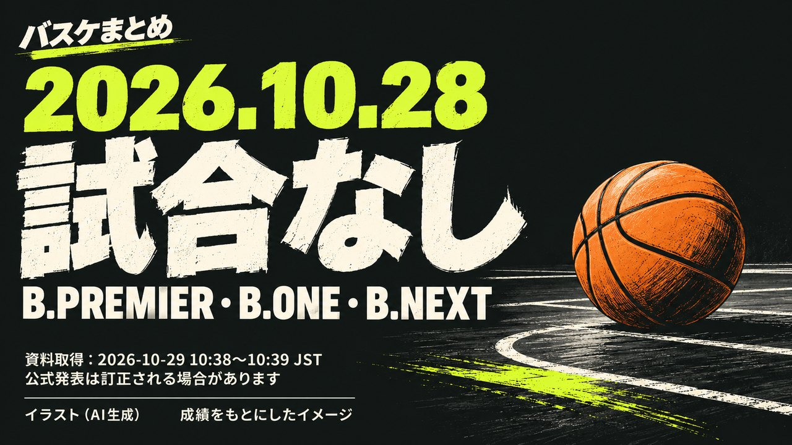
順位・日程
10/28 試合なし
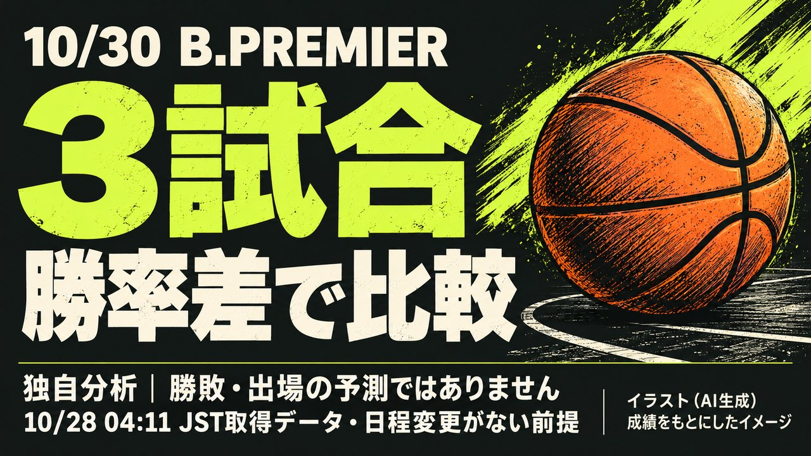
順位・日程
10/28は3リーグとも試合なし、独自分析「10/30のB.PREMIER3試合」を勝率差で比較
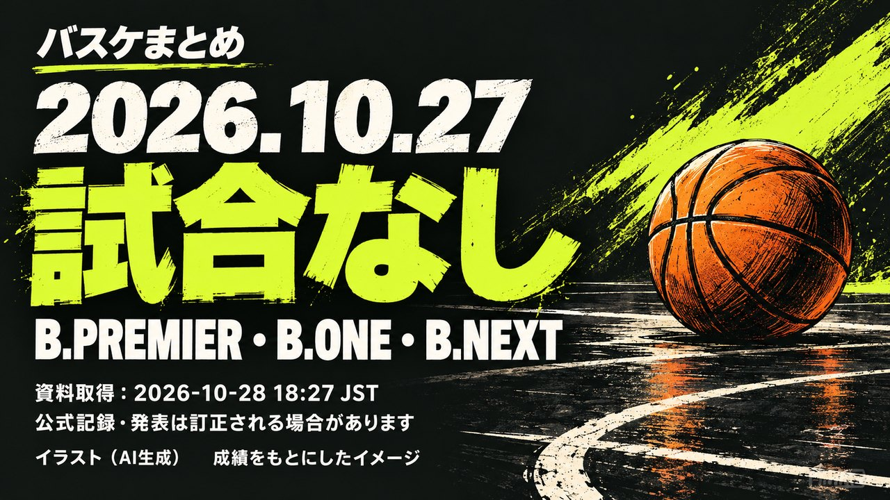
順位・日程
10/27 試合なし
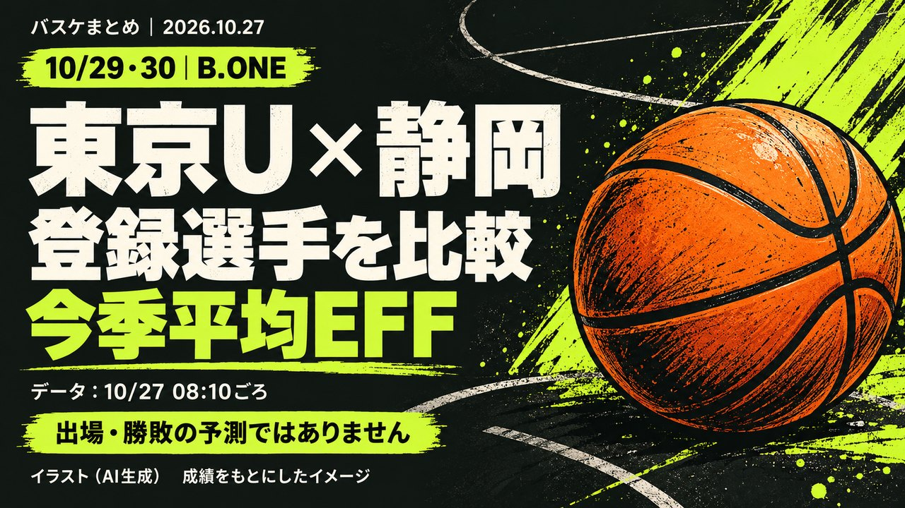
順位・日程
10/27は3リーグとも試合なし、独自分析「東京U×静岡」10/29-30の登録選手EFFを比較
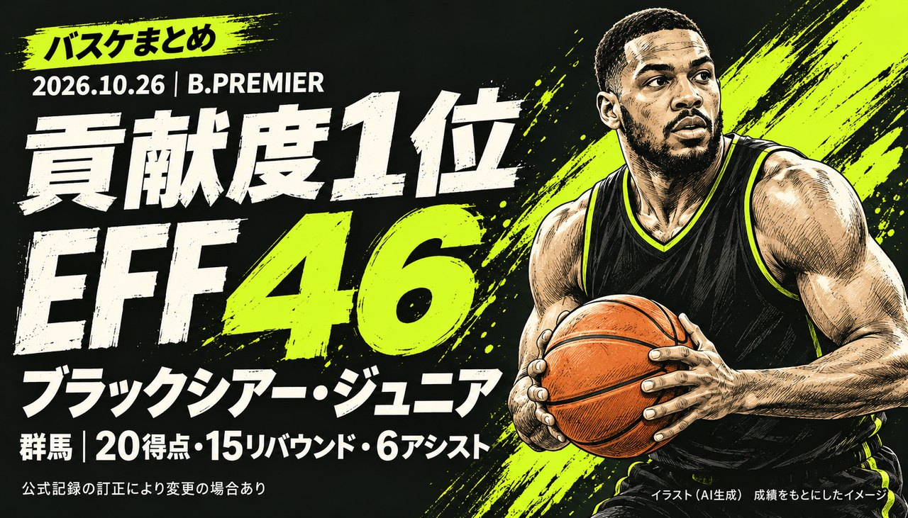
順位・日程
10月26日の貢献度ランキング 1位はケリー・ブラックシアー・ジュニア（群馬）の46
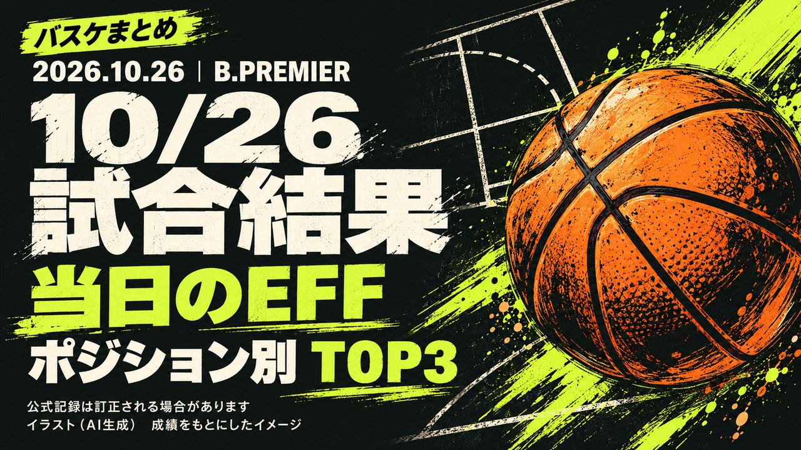
試合結果
10/26 試合結果・当日のEFF
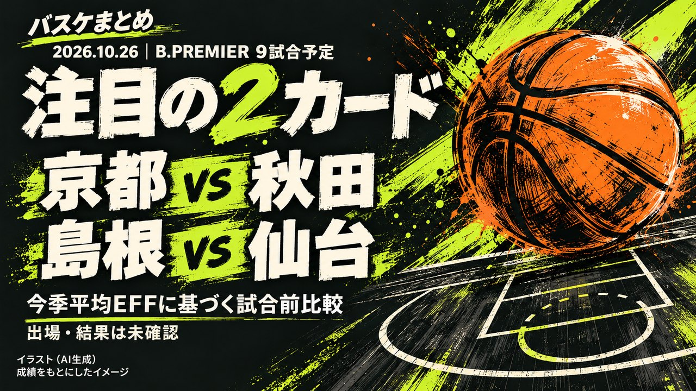
順位・日程
10/26はB.PREMIER9試合、独自分析「ランクイン選手の直接対決」京都vs秋田・島根vs仙台、広島はベスト52人で横浜BCと対戦
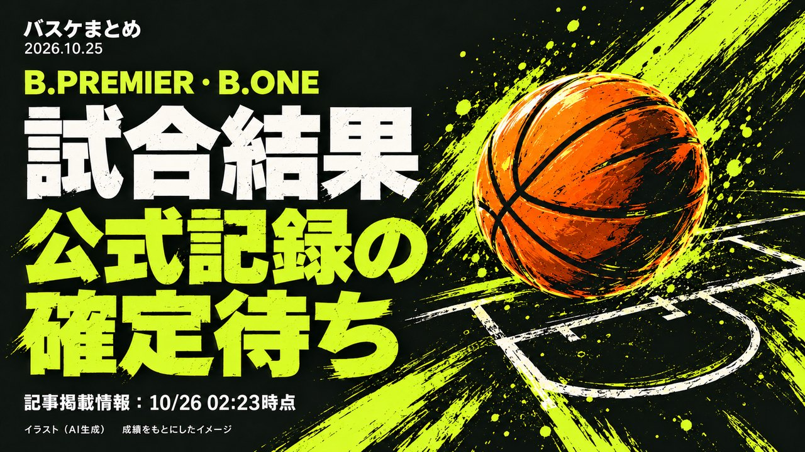
試合結果
10/25 試合結果（公式記録の確定待ち）
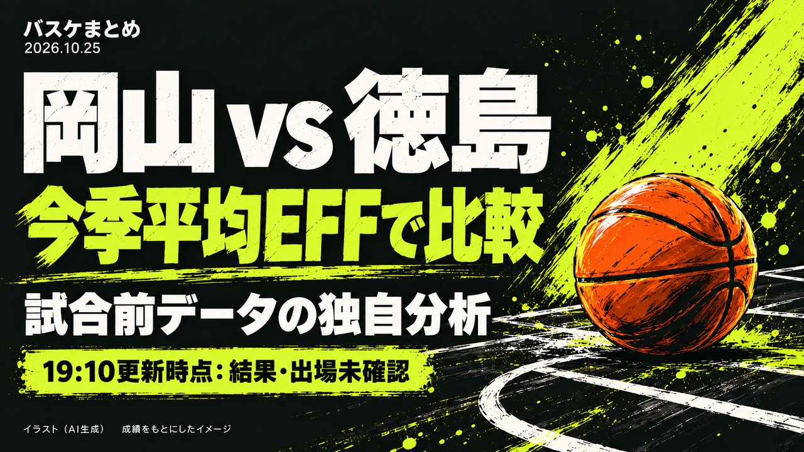
順位・日程
10/25はB.PREMIER2試合・B.ONE10試合、独自分析「今季平均EFF上位の直接対決」岡山vs徳島・名古屋Dの4人ランクインを比較
順位・日程
10月24日の貢献度ランキング 1位はファーダウス・アイマク（神戸）の44
試合結果
10/24 試合結果・当日のEFF
順位・日程
10/24は全国20試合、独自分析「今季平均EFFトップ級が揃う3カード」広島・A東京vs三河・川崎vs仙台を比較
試合結果
10/23 試合結果（公式記録の確定待ち）
順位・日程
八王子vs東京U、町田連戦は今夜19:05にGAME2 前日GAME1は結果未確認で臨む独自プレビュー
順位・日程
10月22日の貢献度ランキング 1位はヴィック・ロー（茨城）の38
試合結果
10/22 試合結果・当日のEFF
最終更新: 2026年10月30日 20:33